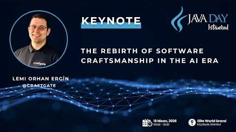
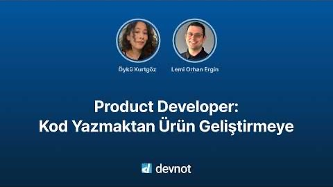
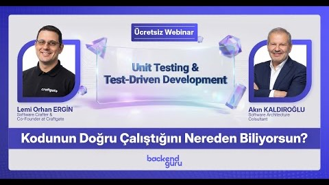

Paylaşımlar
Herkese açık paylaştığım her şey tek yerde: konuşmalarımın slaytları ve kayıtları, kodlarım, podcast'im, yazılarım ve paylaşım yaptığım hesaplar.
Slaytlar
En son slaytlarım. Hepsi Speaker Deck'te.

Videolar
YouTube'daki konuşma kayıtları playlist'imin en üstündeki videolar. Konferans kanallarında yayımlanan kayıtlar da bu listede. Modülerlik üzerine ayrı bir playlist de var.
-

Rebirth of Software Craftsmanship in the AI Era -

Product Developer: From Writing Code to Building Products -
 Unlearn Unit Testing
Unlearn Unit Testing
-

“We Have Tests” Is Not Enough: Unit Testing for Reliable Code -
 “We Have Tests” Is Not Enough: Unit Testing for Reliable Code
“We Have Tests” Is Not Enough: Unit Testing for Reliable Code
-
 Pure Agile: Building a Culture Without Scrum, Kanban and XP
Pure Agile: Building a Culture Without Scrum, Kanban and XP
-
TEDx, 2019
The Apple That Made Me Famous Overnight
TEDxTarsusAmericanCollege'da, Türkçe: macOS'taki root login bug'ının beni dünyaca tanınır yaptığı gece ve bu gecenin meslek etiği hakkında söyledikleri. Hikâyenin tamamı root bug sayfasında.
Kod
GitHub'daki kendi repo'larım. Yanlarındaki yıl, her birinin başladığı yıl.
-
2026, Go
dirstato
macOS terminali için hızlı ve salt okunur bir disk kullanımı gezgini; gösterdiği boyutlar du ile birebir aynı. Kendi Homebrew tap'inden kurulur; proje sayfası.
-
2026, Python
brewdash
Mac'te Homebrew için eksik olan dashboard. Kendi Homebrew tap'inden kurulur; proje sayfası.
-
2026, TypeScript
keycode
macOS için terminal tabanlı bir sunum aracı.
-
2026, Python
audiocript
Ses kayıtlarını metne döken, terminal tabanlı bir macOS uygulaması.
-
2026, JavaScript
firefox-advanced-tab-manager
Tarayıcı için gelişmiş bir sekme yöneticisi.
-
2017
personal-zen
Değerlerim, ilkelerim ve genel olarak hayat üzerine birkaç söz.
Ses
-
Podcast, 2018 – 2020
Lemi'nin Not Defteri
Yazılım, teknoloji ve kültür üzerine Türkçe podcast'im. Apple Podcasts, Spreaker ve YouTube üzerinden de dinleyebilirsiniz. Bir de RSS feed'i var.
-
Konuk, 2020
Technical: How Does Craftbase Build Software?
Üretim Bandı podcast'inde, Craftbase'de yazılımı nasıl geliştirdiğimiz üzerine.
-
Konuk, 2017
How Does iyzico Build Products?
Üretim Bandı podcast'inde, iyzico'nun ürünlerini nasıl geliştirdiği üzerine.
-
Konuk, 2016
On fighting elephants in the room
IT Serbia Podcast'te, İngilizce.
Yazılar
-
Medium, 2025
10 Things Every Foreign Speaker Should Know Before Stepping on the Conference Stage
Kendi ülkesi dışında bir ülkede sahneye çıkmak üzere olan konuşmacılara tavsiyeler.
-
InfoQ, 2019
How to Slow Down to Go Faster Than Ever in Software Development
Acele etmek bir ekibi ne hızlandırır ne de daha üretken yapar. Pratik ve kod kalitesi için yavaşlamak ise ikisini de yapar.
-
Medium, 2017
The Story Behind “anyone can login as root” Tweet
macOS High Sierra'daki root bug'ı duyulduktan bir gün sonra yazdım. Root bug sayfası hikâyeyi basında çıkan haberlerle birlikte yeniden anlatıyor.
-
Blog, 2012 – 2014
Agilistanbul
Agile yazılım geliştirme üzerine Türkçe bloğum. Domain artık yok, bu yüzden bağlantı Internet Archive'daki kopyaya gidiyor.
Hesaplar
- X
- GitHub
- YouTube
- Speaker Deck
- Medium
-
Topluluk
Software Craftsmanship Turkey
Kurduğum topluluk; Kommunity'de ve GitHub'da.